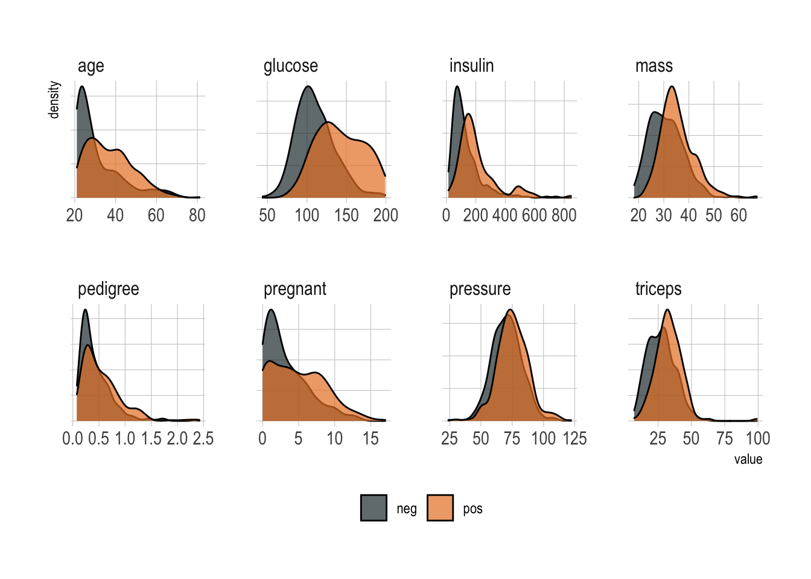
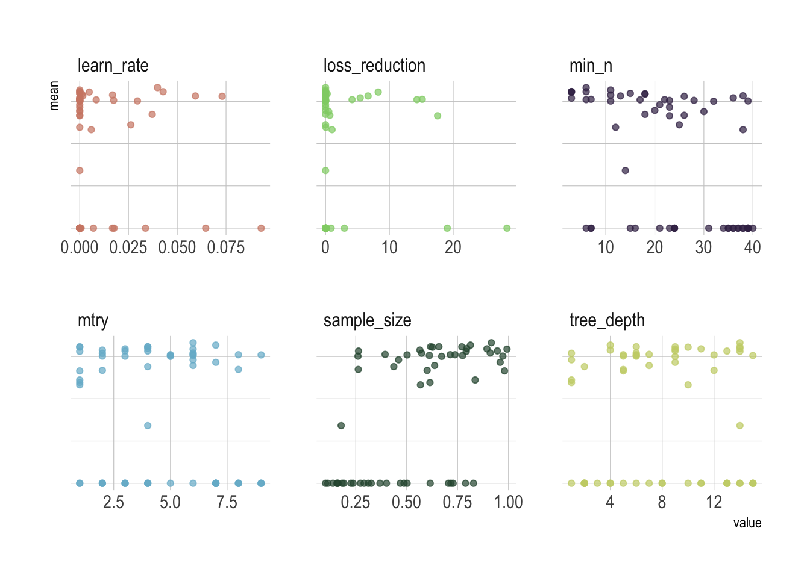
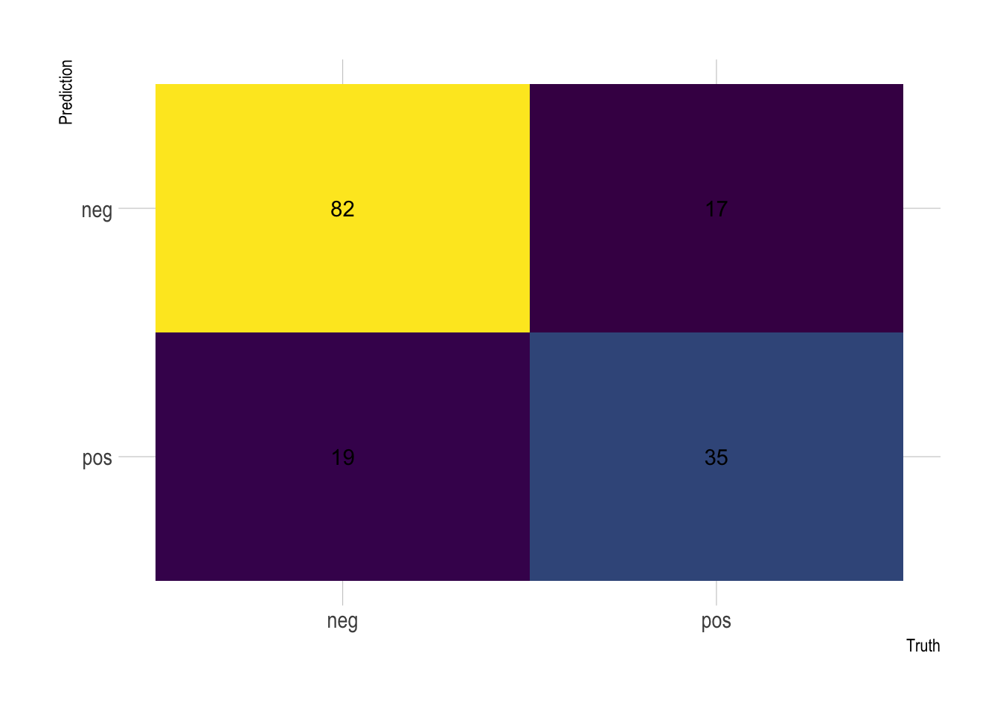
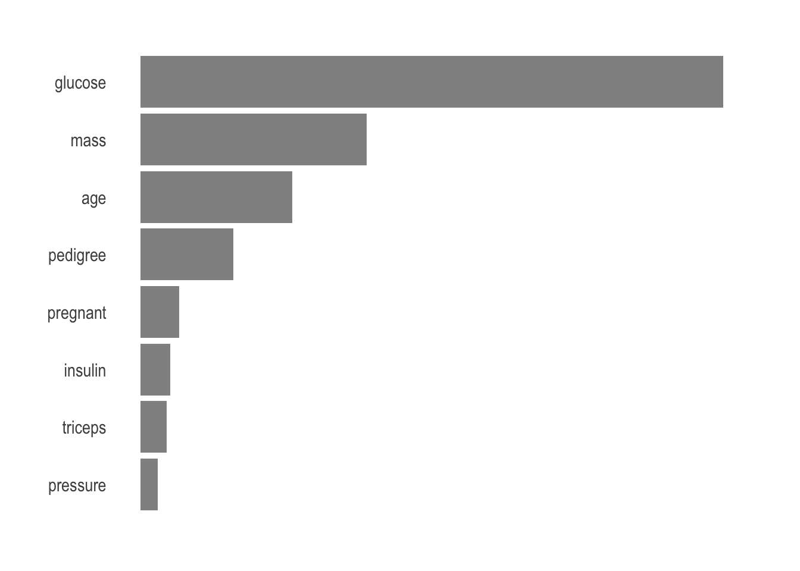

You’re just another budding data scientist in the ever-expanding Kaggle competitions universe, and you must prove your right to become a real master. As François Chollet and JJ Allaire summarized it, there are two techniques you should be familiar with in order to be successful in applied machine learning today: gradient boosting machines, for shallow-learning problems; and deep learning, for perceptual problems. This means mastering XGBoost and Keras.
Recently, XGBoost has been dominating applied machine learning for structured or tabular data. XGBoost stands for eXtreme Gradient Boosting. Boosting itself refers to an ensemble technique where new models are added to correct the errors made by existing models. While gradient boosting is an approach where new models are created that predict the residuals or errors of prior models and then added together to make the final prediction.
The Pima indian diabetes database
The Pima are a group of Native Americans living in Arizona that shows the highest prevalence of type 2 diabetes in the world. This is likely due to a genetic predisposition that allowed them to survive to a diet poor of carbohydrates until the recent shift to processed foods and decline in physical activity created havoc for their metabolism.
The mlbench package is a great resource for such dataset.
data(PimaIndiansDiabetes2)Let’s use PimaIndiansDiabetes2 directly. It is a corrected version of the original data set that showed several physical impossibilities, e.g., blood pressure or body mass index of 0. In this version, all zero values of glucose, pressure, triceps, insulin and mass have been set to NA. A quick exploration reveals the variables we can use to construct a predictive model.
glimpse(PimaIndiansDiabetes2)
## Rows: 768
## Columns: 9
## $ pregnant <dbl> 6, 1, 8, 1, 0, 5, 3, 10, 2, 8, 4, 10, 10, 1, 5, 7, 0, 7, 1, …
## $ glucose <dbl> 148, 85, 183, 89, 137, 116, 78, 115, 197, 125, 110, 168, 139…
## $ pressure <dbl> 72, 66, 64, 66, 40, 74, 50, NA, 70, 96, 92, 74, 80, 60, 72, …
## $ triceps <dbl> 35, 29, NA, 23, 35, NA, 32, NA, 45, NA, NA, NA, NA, 23, 19, …
## $ insulin <dbl> NA, NA, NA, 94, 168, NA, 88, NA, 543, NA, NA, NA, NA, 846, 1…
## $ mass <dbl> 33.6, 26.6, 23.3, 28.1, 43.1, 25.6, 31.0, 35.3, 30.5, NA, 37…
## $ pedigree <dbl> 0.627, 0.351, 0.672, 0.167, 2.288, 0.201, 0.248, 0.134, 0.15…
## $ age <dbl> 50, 31, 32, 21, 33, 30, 26, 29, 53, 54, 30, 34, 57, 59, 51, …
## $ diabetes <fct> pos, neg, pos, neg, pos, neg, pos, neg, pos, pos, neg, pos, …pregnantnumber of times pregnantglucoseplasma glucose concentrationpressurediastolic blood pressuretricepstriceps skin fold thicknessinsulin2-Hour serum insulinmassbody mass indexpedigreediabetes pedigree functionagesimply the agediabetesclass variable to predict
The dataset includes 768 observations, all women, of 8 variables we can use to predict the diabetes target variable, that is if the person has been diagnosed with diabetes or not.
All in all, a classic supervised binary classification. As you can guess, a quick exploratory data analysis reveals that no single predictor works, although age, glucose, and mass all look informative.
PimaIndiansDiabetes2 %>%
pivot_longer(-diabetes, names_to = "predictor", values_to = "value") %>%
ggplot(aes(x = value, fill = diabetes)) +
geom_density(alpha = .7) +
scale_fill_manual(values = c("#24373b", "#e9812d")) +
theme_ipsum() +
theme(legend.title = element_blank(),
legend.position = "bottom",
axis.text.y = element_blank(),
panel.grid.minor = element_blank()) +
facet_wrap(~predictor, scales = "free", ncol = 4)
Set the XGBoost engine
As the centerpiece of the procedure, you can rightly expect every model to start with some preprocessing steps. I’ve been covering this in a previous post but let me walk you through these steps briefly.
First the seeds to ensure reproducibility.
set.seed(42)Then we split into training and test data.
PimaIndiansDiabetes_split <- PimaIndiansDiabetes2 %>%
initial_split(prop = .8)
train_tbl <- training(PimaIndiansDiabetes_split)
test_tbl <- testing(PimaIndiansDiabetes_split)Finally, a cross-validated version of train_tbl.
folds <- vfold_cv(train_tbl)Preprocessing also includes transforming the data to facilitate the training process and get the best out of the model. This is normally a critical step, however, XGBoost is robust against highly skewed and/or correlated data, so the amount of preprocessing is minimal. Nevertheless, we need to substitute all the missing values I talked about earlier. step_meanimpute will impute training set mean of those variables.
Normalizing, well, never hurts, right.
rec_obj <- train_tbl %>%
recipe(diabetes ~ .) %>%
step_meanimpute(all_predictors()) %>%
step_normalize(all_predictors()) %>%
prep(data = train_tbl)As crucial as it is, that wasn’t really difficult.
In return, XGBoost requires a lot of model hyperparameters fine tuning. For now, we only need to specify them as they will undergo tuning in a subsequent step and the list is long.
xgb_model <- boost_tree() %>%
set_args(tree_depth = tune(),
min_n = tune(),
loss_reduction = tune(),
sample_size = tune(),
mtry = tune(),
learn_rate = tune()) %>%
set_engine("xgboost") %>%
set_mode("classification")It’s easy to grasp how cumbersome this could be to explore manually. Before using a model, you should of course familiarize yourself with all parameters and make sure you understand what they do.
But to find the best combination we can use grid_max_entropy() that covers the hyperparameter space such that any portion of the space has an observed combination that is not too far from it.
xgb_grid <- grid_max_entropy(
tree_depth(),
min_n(),
loss_reduction(),
sample_size = sample_prop(),
finalize(mtry(), train_tbl),
learn_rate(),
size = 60)Note that mtry() is different because it depends on the actual number of predictors in the data. Overall, we now have 60 combinations to perform grid search over. Here just a preview of the head().
xgb_grid %>%
head() %>%
knitr::kable()| tree_depth | min_n | loss_reduction | sample_size | mtry | learn_rate |
|---|---|---|---|---|---|
| 2 | 7 | 28.4306252 | 0.1379630 | 1 | 0.0000000 |
| 6 | 11 | 0.0024428 | 0.2609497 | 3 | 0.0000001 |
| 14 | 14 | 0.0002371 | 0.1784515 | 4 | 0.0000041 |
| 4 | 11 | 0.0046957 | 0.5650771 | 2 | 0.0168618 |
| 15 | 6 | 0.1372916 | 0.7279827 | 8 | 0.0000000 |
| 1 | 39 | 0.0000000 | 0.8282023 | 7 | 0.0000000 |
Finally, let’s pipe this into a workflow that combines recipe and model together.
xgb_workflow <- workflow() %>%
add_recipe(rec_obj) %>%
add_model(xgb_model)The search for the lowest cost
Model tuning is probably the most important step and where the tidymodels ecosystem of packages really comes together. It performs grid search over the grid space to identify the hyperparameter values that have the lowest prediction error.
xgb_tune <- xgb_workflow %>%
tune_grid(resamples = folds,
grid = xgb_grid,
metrics = metric_set(accuracy, roc_auc))tune_grid() performs the grid search over all 60 grid parameter combinations and used fold cross validation to measure prediction accuracy. That’s a whopping 600 models tried in search of the optimal one!
And here are the results pipped into ggplot.
xgb_tune %>%
collect_metrics() %>%
filter(.metric == "roc_auc") %>%
select(mean, mtry:sample_size) %>%
pivot_longer(mtry:sample_size,
values_to = "value",
names_to = "parameter") %>%
ggplot(aes(x = value, y = mean, color = parameter)) +
geom_point(alpha = .7) +
scale_color_ipsum() +
theme_ipsum() +
theme(legend.position = "none",
axis.text.y = element_blank(),
panel.grid.minor = element_blank()) +
facet_wrap(~parameter, scales = "free_x")
Remember that we used a space-filling parameter grids for the parameters to try, so it might not be easy to pick up the right combination from the plot and probably better to let the computer pick it up for us.
xgb_tune %>%
show_best(metric = "roc_auc") %>%
select(.metric:std_err) %>%
knitr::kable()| .metric | .estimator | mean | n | std_err |
|---|---|---|---|---|
| roc_auc | binary | 0.8326303 | 10 | 0.0219971 |
| roc_auc | binary | 0.8269298 | 10 | 0.0244281 |
| roc_auc | binary | 0.8232086 | 10 | 0.0233504 |
| roc_auc | binary | 0.8231515 | 10 | 0.0247107 |
| roc_auc | binary | 0.8229426 | 10 | 0.0222828 |
We will keep the best performing hyperparameter values based on the area under the ROC curve. This value will lie between .5 and 1, with 1 being a perfect prediction model.
xgb_param <- xgb_tune %>%
select_best(metric = "roc_auc")Once we’ve decided on all parameters, we’re ready to plug into the final model. This will train the model specified by the workflow using the training data and produce evaluations based on the test set.
xgb_workflow <- xgb_workflow %>%
finalize_workflow(xgb_param)It’s time to evaluate performance
After we completed the training, it’s time to evaluate the model’s performance. Of course in medicine, you’ll have to choose whether to prioritize precision or recall, which creates another decision point for choosing the best model.
Let’s extract the confusion matrix to directly visualization performance.
xgb_workflow %>%
last_fit(PimaIndiansDiabetes_split) %>%
collect_predictions() %>%
conf_mat(truth = diabetes, estimate = .pred_class) %>%
autoplot(type = "heatmap") +
theme_ipsum() +
scale_fill_continuous(type = "viridis") +
theme(legend.position = "none")
From there you can derive all the other scores. On Kaggle, however, people are normally looking at the overall accuracy, which is simply the proportion of the data that are predicted correctly.
xgb_workflow %>%
last_fit(PimaIndiansDiabetes_split) %>%
collect_metrics() %>%
mutate_if(is.numeric, ~ round(. * 100, 2)) %>%
knitr::kable()| .metric | .estimator | .estimate |
|---|---|---|
| accuracy | binary | 77.78 |
| roc_auc | binary | 86.01 |
77.78%, that’s awesome! This directly catapults us among the very best scores on the platform where 76% is considered as a milestone hard to achieve. All the hyperparameter tuning allows to claim an 1.78% improvement.
Also, the metrics on the test data are comparable to the training data metrics, so we can assume that there is no overfitting going on here.
Finally, we generally want to know what are the most important parameters used by the model to make its prediction. There is no reason to suspect anything but the vip package makes it so easy to visualize.
xgb_workflow %>%
fit(PimaIndiansDiabetes2) %>%
pull_workflow_fit %>%
vip(alpha = .7) +
theme_ipsum() +
theme(panel.grid.major = element_blank(),
panel.grid.minor = element_blank(),
axis.title.x = element_blank(),
axis.title.y = element_blank(),
axis.text.x = element_blank())
Unsurprisingly, age, glucose, and mass are the most important parameters to predict.
Stay tuned
Hopefully I’ve shown you a glimpse of the nail-biting choices that go into the hyperparameter tuning. More than the model selection, or at least as much as it, this will allow to leverage on the true power of machine learning. Often the best choice relies more on experimental results than theory, and thus the best method to determine the optimal settings is to try many different combinations to evaluate the performance of each model.
However, evaluating each model only on the training set can lead to one of the most fundamental problems in machine learning: overfitting. The standard procedure for hyperparameter optimization accounts for overfitting through cross validation, i.e., each time evaluating on a different fold. As this is quickly overwhelming, you should leverage on a random search that is made so easy by the tidymodels package and fast-track your way up the top rankings of Kaggle.